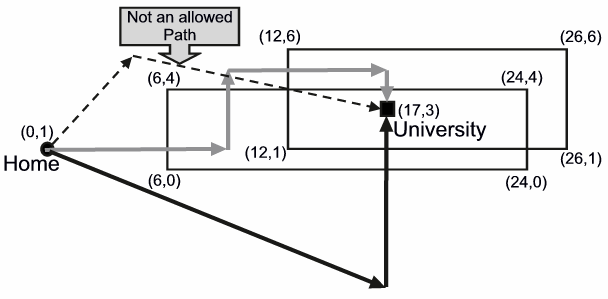

ICPC World Finals 2005 · Problem F
Peter Longfoot is a student at the university of Suburbia. Every morning, Peter leaves home to walk to the university. Many other students are driving their cars or riding their bicycles to campus, but Peter prefers to walk, avoiding the chaotic traffic of the city as much as possible.
Unfortunately, Peter cannot avoid the traffic entirely, since he has to cross streets in order to reach the university. Recently, Peter has wondered how to minimize the number of streets he has to cross. For example, in the following map, streets are drawn as horizontal and vertical lines. To reach the university starting at his home, Peter has to cross at least two streets. Peter cannot cross a street pair at an intersection and Peter cannot walk along a street.

Peter knows the locations of all streets in the city, but he has trouble figuring out the best way to the university. So you must write a program to help him.
The input consists of several descriptions of cities. Each description starts with a line containing a single integer n (1 ≤ n ≤ 500), the number of streets in the city. This is followed by n lines, each containing four integers x1, y1, x2, y2, indicating that there is a street from coordinates (x1, y1) to (x2, y2). All streets are parallel to either the x- or y-axis, since the city is built on a square grid. Streets can overlap, in which case they are counted as only one street. The city description is concluded by a line containing four integers xh, yh, xu, yu, the coordinates (xh, yh) of Peter’s home, and the coordinates (xu, yu) of the university, respectively. Neither Peter’s home nor the university will be located on a street. You should consider the streets as straight-line segments, so the streets have no width. Although the endpoints of the streets are integers, Peter doesn’t need to walk along the grids. He can walk in any direction he likes. The magnitudes of all integers in the input file are less than 2×109.
The input is terminated by a line consisting of the integer zero.
For each city description, first output its number in the sequence of descriptions. Then output the minimum number of streets that Peter has to cross to go from his home to the university.
Follow the format of the sample output.
8 6 0 24 0 24 0 24 4 24 4 6 4 6 4 6 0 12 1 26 1 26 1 26 6 26 6 12 6 12 6 12 1 0 1 17 3 1 10 10 20 10 1 1 30 30 0
City 1 Peter has to cross 2 streets City 2 Peter has to cross 0 streets